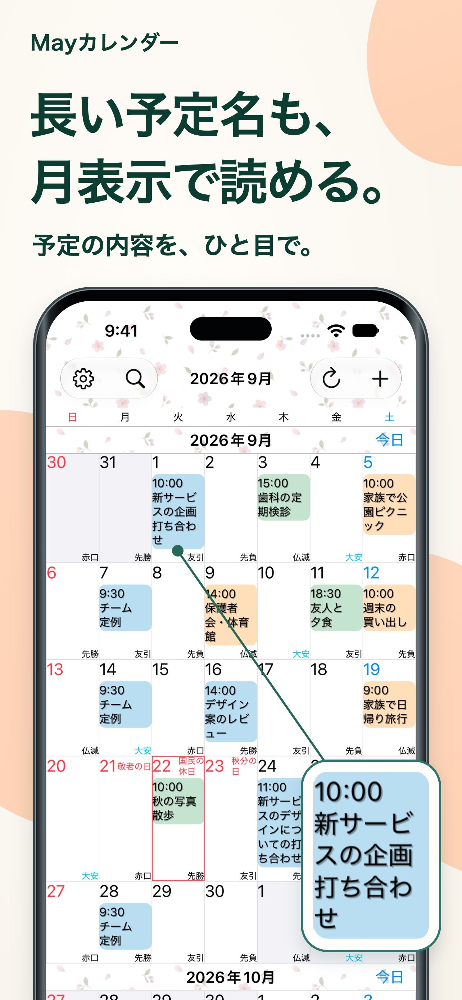
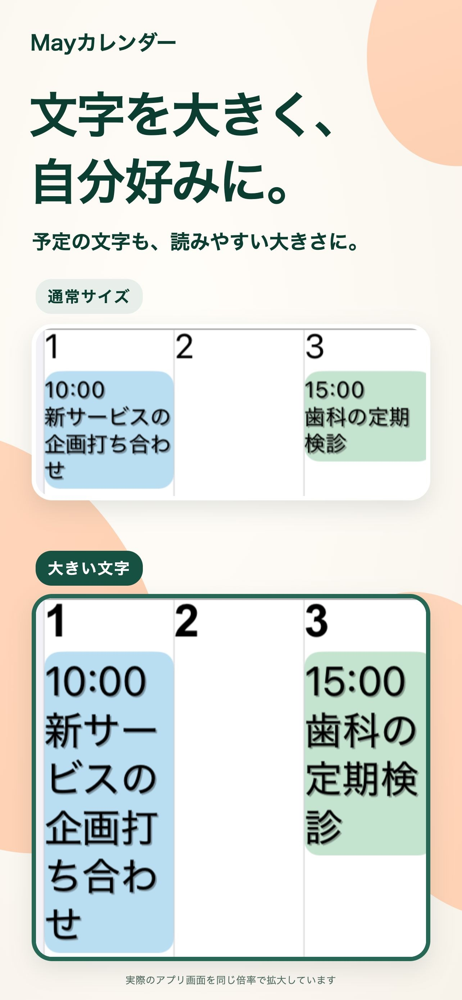
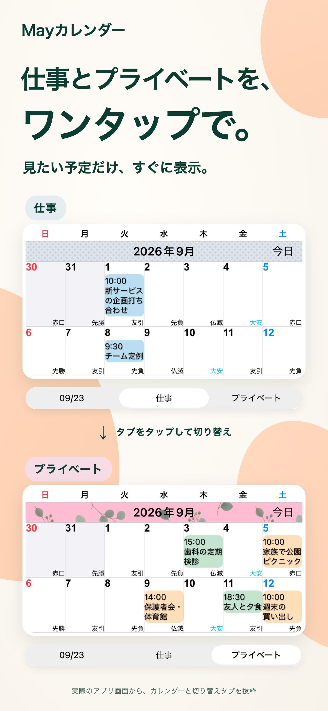
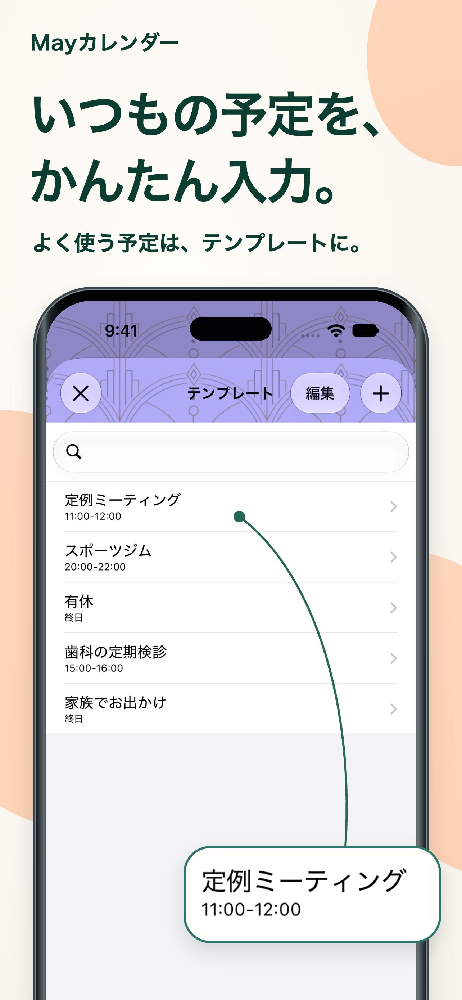

見た目も、自分らしく。
テーマカラーや予定の背景色、模様を組み合わせて、毎日開きたくなるカレンダーに。
毎日に、見やすさを。
長い予定名も、月表示のまま。文字も、色も、あなたに合わせて。ひと目でわかるカレンダーを、いつもの毎日に。
iPhone・iPadで使えるApp Storeで見る無料でダウンロード・アプリ内課金あり

予定を眺める時間が、ちょっと心地よくなる。
仕事も、暮らしも。あなたの毎日が見渡せる場所に。あなたの毎日のために
「もう少しこうだったら」を、あなたのかたちに。
長い予定名は、複数行で表示。文字サイズやフォントも調整できるから、月全体を見渡しながら、予定の内容まで確認できます。

表示するカレンダーの組み合わせを保存。仕事用、プライベート用など、見たい予定へワンタップで切り替えられます。

会議、ジム、通院。よく使う予定を保存しておけば、日付をダブルタップして、テンプレートを選ぶだけで登録できます。

細かな工夫で、もっと快適に
テーマカラーや予定の背景色、模様を組み合わせて、毎日開きたくなるカレンダーに。
用途に合わせて選べる20種類のウィジェット。iPad限定のウィジェットも用意しています。
入力した文字に一致する予定だけを表示。探したい予定に絞って、カレンダーを確認できます。
よくある質問
無料でダウンロードできます。アプリ内課金もあります。現在の価格や購入項目は、App Storeの掲載情報をご確認ください。 App Storeで見る
iPhoneとiPadに対応しています。iPad限定のウィジェットも用意しています。対応するOSの最新情報は、App Storeでご確認ください。
リマインダー、祝日、週番号、太陰暦の表示に対応しています。週の開始曜日やタイムゾーンも設定できます。
通知はAppleの「カレンダー」アプリから届きます。予定の開始時刻前だけでなく、終了時刻前にも通知を設定できます。
もっと見やすい毎日へ
あなたにちょうどいいカレンダーを、今日から。